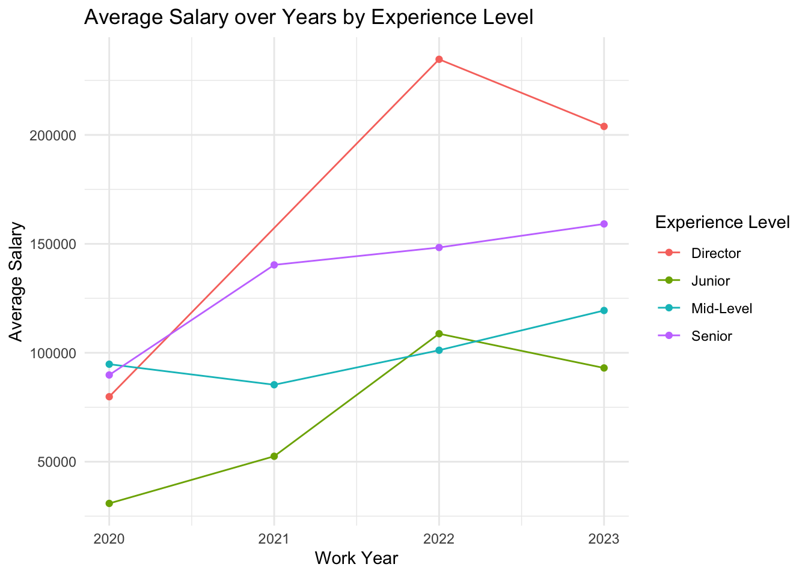
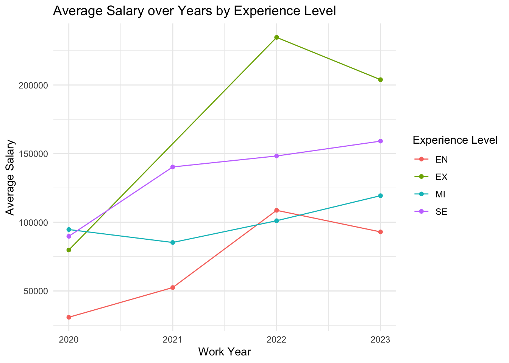
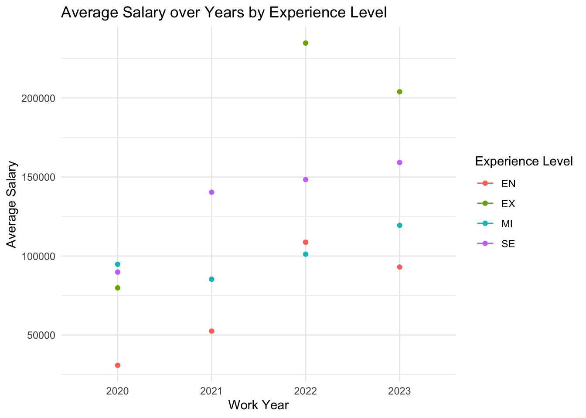

The following objects are masked from 'package:stats':
filter, lag
The following objects are masked from 'package:base':
intersect, setdiff, setequal, union
library(knitr)library(kableExtra)
Attaching package: 'kableExtra'
The following object is masked from 'package:dplyr':
group_rows
tar_read(sum_full_data)
work_year experience_level employment_type job_title
Min. :2020 Length:3755 Length:3755 Length:3755
1st Qu.:2022 Class :character Class :character Class :character
Median :2022 Mode :character Mode :character Mode :character
Mean :2022
3rd Qu.:2023
Max. :2023
salary salary_currency salary_in_usd employee_residence
Min. : 6000 Length:3755 Min. : 5132 Length:3755
1st Qu.: 100000 Class :character 1st Qu.: 95000 Class :character
Median : 138000 Mode :character Median :135000 Mode :character
Mean : 190696 Mean :137570
3rd Qu.: 180000 3rd Qu.:175000
Max. :30400000 Max. :450000
remote_ratio company_location company_size
Min. : 0.00 Length:3755 Length:3755
1st Qu.: 0.00 Class :character Class :character
Median : 0.00 Mode :character Mode :character
Mean : 46.27
3rd Qu.:100.00
Max. :100.00
tar_read(missing_de_data)
Variable
Number of missing values
work_year
0
experience_level
0
employment_type
0
job_title
0
salary
0
salary_currency
0
salary_in_usd
0
employee_residence
0
remote_ratio
0
company_location
0
company_size
0
tar_read(sum_de_data)
work_year experience_level employment_type
Min. :2020 EN: 66 CT: 0
1st Qu.:2022 EX: 51 FL: 1
Median :2022 MI:205 FT:1037
Mean :2022 SE:718 PT: 2
3rd Qu.:2023
Max. :2023
job_title salary salary_currency
Data Engineer :1040 Min. : 12000 USD :923
3D Computer Vision Researcher: 0 1st Qu.: 102000 GBP : 54
AI Developer : 0 Median : 137500 EUR : 51
AI Programmer : 0 Mean : 156575 INR : 6
AI Scientist : 0 3rd Qu.: 176400 TRY : 2
Analytics Engineer : 0 Max. :4450000 AUD : 1
(Other) : 0 (Other): 3
salary_in_usd employee_residence remote_ratio company_location
Min. : 12000 US :903 Min. : 0.00 US :907
1st Qu.:101484 GB : 53 1st Qu.: 0.00 GB : 55
Median :135000 ES : 21 Median : 0.00 ES : 19
Mean :142786 CA : 8 Mean : 42.36 CA : 8
3rd Qu.:175000 GR : 7 3rd Qu.:100.00 DE : 7
Max. :324000 IN : 6 Max. :100.00 GR : 7
(Other): 42 (Other): 37
company_size
L: 79
M:953
S: 8
tar_read(salary_experience_plot)

tar_read(salary_company_loc_plot)

tar_read(salary_trend_plot)

tar_read(summary_lm)
Call:
lm(formula = salary_in_usd ~ work_year + experience + company_loc,
data = de_data_location)
Residuals:
Min 1Q Median 3Q Max
-128735 -31208 -3735 26192 161265
Coefficients:
Estimate Std. Error t value Pr(>|t|)
(Intercept) -10735780 4999111 -2.148 0.0320 *
work_year 5384 2472 2.178 0.0296 *
experienceJunior -102638 9048 -11.344 < 2e-16 ***
experienceMid-Level -81241 7729 -10.511 < 2e-16 ***
experienceSenior -53713 6972 -7.705 3.07e-14 ***
company_locUS 56956 5036 11.311 < 2e-16 ***
---
Signif. codes: 0 '***' 0.001 '**' 0.01 '*' 0.05 '.' 0.1 ' ' 1
Residual standard error: 47990 on 1034 degrees of freedom
Multiple R-squared: 0.3196, Adjusted R-squared: 0.3163
F-statistic: 97.13 on 5 and 1034 DF, p-value: < 2.2e-16
Numeric Variable
tar_load(de_data)# Filter out numerical variables from train dataset and set it into a new dfnumerical_dat <- de_data[, sapply(de_data, is.numeric)]numerical_summary <-data.frame(Variable =character(0),Min =numeric(0),Quartile_1 =numeric(0),Median =numeric(0),Mean =numeric(0),Quartile_3 =numeric(0),Max =numeric(0),stringsAsFactors =FALSE)# Create summary statistics table for numerical variablesfor (i in2:ncol(numerical_dat)) { x <- numerical_dat[, 2]# Calculate summary statistics using summary() summary_result <-summary(x)# Define a regular expression pattern to match the numeric value pattern <-"-?\\d+\\.?\\d*"# Create a data frame for the current numerical variable result_df <-data.frame(Variable =colnames(numerical_dat)[i],Min =regmatches(summary_result[1], gregexpr(pattern, summary_result[1], perl=TRUE))[[1]],Quartile_1 =regmatches(summary_result[2], gregexpr(pattern, summary_result[2],perl=TRUE))[[1]],Median =round(as.numeric(regmatches(summary_result[3], gregexpr(pattern, summary_result[3], perl=TRUE))[[1]]),2),Mean =round(as.numeric(regmatches(summary_result[4], gregexpr(pattern, summary_result[4], perl=TRUE))[[1]]),2),Quartile_3 =regmatches(summary_result[5], gregexpr(pattern, summary_result[5],perl=TRUE))[[1]],Max =regmatches(summary_result[6], gregexpr(pattern, summary_result[6], perl=TRUE))[[1]],stringsAsFactors =FALSE )# Bind the result to the summary dataframe numerical_summary <-rbind(numerical_summary, result_df)options(scipen =0)}# Set row names to be the names of the numerical variablesrownames(numerical_summary) <- numerical_summary$Variablenumerical_summary <- numerical_summary[, -1]# Creating a scrollable HTML tablehtml_numerical_table <-kable(numerical_summary, "html") %>%kable_styling(full_width =FALSE) %>%as.character()# Creating scrollable divhtml_numerical_output <-paste0('<div style="max-height: 400px; overflow-y: auto;" id="NumericVar">','<p>Summary statistics of ltd aggregate data features</p>', html_numerical_table,'</div>')cat(html_numerical_output)
Summary statistics of ltd aggregate data features
Min
Quartile_1
Median
Mean
Quartile_3
Max
salary
12000
102000
137500
156575
176400
4450000
salary_in_usd
12000
102000
137500
156575
176400
4450000
remote_ratio
12000
102000
137500
156575
176400
4450000
Factor Variable
# Filter out factor variables from train dataset and set it into new dffactor_dat <- de_data[, sapply(de_data, is.factor)]# Create an empty dataframe to store resultsfactor_summary <-data.frame(Factor_Variable =character(0),Count =numeric(0),Unique =numeric(0),Mode =character(0),Frequency =numeric(0),stringsAsFactors =FALSE)# Create summary statistics table for factor variablesfor (i in1:ncol(factor_dat)) { x <- factor_dat[, i]# Get distinct values unique_values <-unique(x)# Generate frequency table table_result <-table(factor_dat[, i])# Remove NAs from the result table_result <- table_result[!is.na(names(table_result))]# Find the level with the highest frequency mode <-names(which.max(table_result))# Frequency of the mode values mode_freq <-sum(x == mode, na.rm =TRUE)# Create a data frame for the current factor variable result_df <-data.frame(Factor_Variable =names(factor_dat)[i],Count =sum(!is.na(x)),Unique =sum(!is.na(unique_values)),Mode = mode,Frequency = mode_freq,stringsAsFactors =FALSE )# Bind the result to the summary dataframe factor_summary <-rbind(factor_summary, result_df)}# Set row names to be the names of the factor variablesrownames(factor_summary) <- factor_summary$Factor_Variablefactor_summary <- factor_summary[, -1]# Creating a scrollable HTML tablehtml_categorical_table <-kable(factor_summary, "html") %>%kable_styling(full_width =FALSE) %>%as.character()# Creating scrollable divhtml_categorical_output <-paste0('<div style="max-height: 400px; overflow-y: auto;" id="NumericVar">','<p>Summary statistics of factor features</p>', html_categorical_table,'</div>')cat(html_categorical_output)